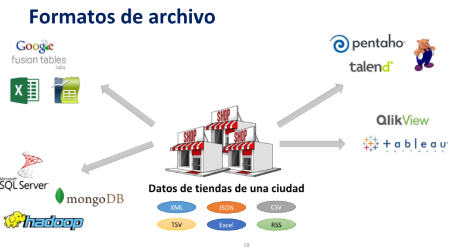

Fundamentos de inteligencia de negocios (BI)¶
90 min | Última modificación: Enero 08, 2020.
Arquitectura de una solución de inteligencia de negocios¶
Para el desarrollo de una solución de inteligencia de negocios es necesario comprender su arquitectura, en la imagen es posible apreciar 3 capas: la capa de fuentes de datos, la capa de almacenes de datos y la capa de análisis y aplicaciones BI. Entre la primera y segunda capas se requiere el proceso de extracción, transformación y carga (ETL) que suministre los datos crudos o en bruto (raw data) al almacén de datos (data warehouse). Para el análisis de datos se requieren aplicaciones BI que accedan al data warehouse mediante cubos OLAP y procesos de integración de datos.
La capa de fuente de datos¶
Los datos en bruto existen en gran cantidad y diversidad de formatos y pueden clasificarse según:
El origen:
Internos: Son de la propia empresa, pueden presentarse en bases de datos, archivos o reportes de sistemas informáticos (ERP, CRM, SCM)
Externos: Se obtienen de otras organizaciones (redes sociales, sistemas de información geográfica, sistemas gubernamentales) mediante web services, descarga de sitios web, por email, reportes de sistemas informáticos.
El formato:
Estructurados: Se obtienen de bases de datos relacionales, otras data warehouse.
Semi-estructurados: Por lo general son archivos en formatos: CSV, JSON, XML, HTML, etc.
No estructurados: datos de archivos como PDF, imagen, sonido, video, etc.

El tamaño:
Volúmenes de datos normales: Cientos o miles de registros medidos en KB o MB.
Grandes volúmenes de datos (big data): Millones de registros medidos en GB, TB o PB (Peta Byte), generalmente se encuentran en sistemas clusterizados con mecanismos de procesamiento y almacenamiento distribuido.
La capa de data warehouse¶
Comprende los grandes repositorios de metadatos (Son datos acerca de los datos), en este ámbito se encuentran los Data Warehouse y los Big Data.
Data Warehouse (DW):¶
Es considerado un almacén o bodega de datos estructurados que contiene información temática, histórica e integrada según los indicadores clave de desempeño que se hayan previsto en una organización (Rosado G. & Rico B., 2010). Un DW es temático debido a que está conformado por áreas o grupo de datos de una organización. Cada tema del DW es representado por un Data mart.
Data Mart: Comprende un subconjunto de datos enfocados en el análisis de un tema, área o ámbito específico en una organización (Mosquera & Hallo, 2014). El conjunto de data marts comprende un data warehouse.
Componentes de un Data Mart:
Tabla de hechos (table fact): Es la tabla central del data mart, que contiene los datos o medidas (indicadores claves de desempeño del negocio KPI’s) que se utilizan para análisis y las claves de las tablas de dimensiones. Es común nombrar las tablas de hechos en función del área/tema que representa el data mart; por ejemplo, si el data mart representa los cultivos agrícolas que se han producido o que están en proceso de producción, la tabla de hechos puede ser: th_produccion_cultivos.
Tablas de Dimensiones: Corresponden a las perspectivas o vistas a través de las cuales es posible analizar las medidas del negocio o KPI’s. Por ejemplo: para la medida densidad de siembra (número de plantas por hectárea), las posibles dimensiones pueden ser: especie de cultivo (banano, cacao, café, etc.), clase de cultivo (frutales, hortalizas, cereales, etc.), tipo de cultivo según duración (ciclo corto, perennes), tiempo de la siembra (año, semestre, trimestre y mes), tipo de suelo, etc.
Medida o KPI (Key Performance Indicator): Representa un valor numérico que contribuye al análisis de un hecho. Por ejemplo: densidad de siembra (número de plantas por hectárea), edad del cultivo (días o años), rendimiento de un cultivo (toneladas métricas por hec- tárea TM/ha), costos de producción por hectárea, rentabilidad de un cultivo (ingresos – egresos), etc.
Big Data:¶
Representa un conjunto de recursos de información de gran volumen, que se obtienen a altas velocidades y con una variedad de formatos, que demandan un almacenamiento escalable y eficiente, formas innovadoras de procesamiento de información para mejorar el análisis, la comprensión y toma de decisiones (NIST Big Data Public Working Group, 2015).
Una Big Data es una oportunidad para que las organizaciones obtengan ventajas competitivas en el mundo actual digitalizado y globalizado (De Mauro, Greco, & Grimaldim, 2015). Un término asociado a Big Data es Data Lake, que comprende grandes conjuntos de datos (big data sets), también llamados lagos de datos, que se etiquetan para realizar consultas o buscar patrones.
Los tipos de Big Data en función de sus prestaciones pueden ser: * De alto rendimiento: Teradata, HP Vertica IBM Netezza Oracle Exadata
Distribuidos: Hadoop (HDFS es Hadoop Distributed File System), considerado como la plataforma más utilizadas para el procesamiento y almacenamiento distribuido de Plataformas que integran Hadoop son Hortonworks, Cloudera, AWS Microsoft Azure, etc.
Modelos dimensionales¶
A continuación se detallarán los tres tipos de estructuras de modelo del DW:
Esquema en Estrella: Contiene una sola tabla de hechos con los datos de análisis y las claves de todas las tablas de dimensiones. No existen relaciones entre las dimensiones.
Esquema en Copo de Nieve: Similar al esquema en estrella con la diferencia de que las dimensiones pueden relacionarse creando jerarquías.
Esquema en Constelación: Integración de varios esquemas estrella o copos de nieve que representan un data warehouse. Su diseño puede llegar a ser complejo debido a la cantidad de relaciones entre las tablas de hechos y dimensiones, más si las dimensiones se comparten entre varios data marts. Es aconsejable manejar por separado el diseño de los data marts; sin embargo, en la implementación física del data warehouse es necesario optimizar y no repetir dimensiones.
El proceso de Extracción Transformación y Carga (ETL)¶
ETL de sus siglas en inglés Extraction, Transformation and Load, es el proceso que permite seleccionar datos desde múltiples fuentes, utilizando una herramienta de integración se pre-procesan y se cargan en un nuevo almacén de datos (data warehouse).
Las actividades ETL se describen a continuación:
Extracción. Consiste en la identificación de los datos fuentes, verificación de su calidad, lectura de datos crudos, obtención de agregados y establecimiento de la estructura de la metadata del data warehouse.
Transformación. Comprende la aplicación de una serie de reglas de negocio sobre los datos extraídos para convertirlos en datos con el formato del data warehouse. Algunas de estas actividades son: limpieza, cambio de formato, generación de datos calculados, creación de nuevos datos o claves, filtrado, ordenación, asociaciones y agregaciones.
Carga. Las actividades que se realizan son: integración de datos, pruebas de carga, carga (escritura) de datos en el data warehouse, gestión de errores y mantenimiento de metadata.

Cubos Multidimencionales OLAP¶
Cubos OLAP. OLAP significa procesamiento analítico en línea. Un cubo OLAP representa el esquema o definición de la estructura multidimensional para el análisis de datos empresariales que se encuentra agregados y organizados en un data warehouse. Un cubo se construye definiendo una tabla de hechos, las medidas y las dimensiones.
¿Cuántos pares de zapatos Hello se vendieron a almacenes Éxito?
¿Cuántos productos se vendieron en total a Iserra el 1 de octubre de 2011?
¿Cuántos pares de zapatos Hello se vendieron a Iserra el 1 de octubre de 2011?
¿Cuántos bolsos Hello se vendieron a Olímpica?
¿Cuántos bolsos Hello se vendieron en total el 1 de noviembre?
¿Cuántos zapatos Hello se vendieron en total?
¿Cuántos productos se vendieron en total?
¿Cuántos productos se vendieron en total el 1 de noviembre de 2011?
La capa analítica o de aplicaciones de BI¶
En esta capa se ubican las aplicaciones y herramientas para el análisis descriptivo y predictivo de los datos, las más destacadas son: visores OLAP, tableros de control (dashboards), reportes y consultas Ad Hoc, Minería de datos y otras. Este tipo de aplicaciones se clasifican en dos tipos de sistemas que ya fueron mencionados en las secciones anteriores: los sistemas de soporte de decisiones (DSS) y los sistemas de información para ejecutivos (EIS).
Análisis multidimensional OLAP: Mediante visores de cubos OLAP, es posible generar consultas dinámicas de tipo MDX. Es decir, el usuario puede elegir los KPI’s o medidas y dimensiones a visualizar. Las operaciones OLAP que se pueden realizar son:
Roll-up (Agregación): Eliminación de un criterio de agrupación para el análisis.
Drill-down (Disgregación): Introducción de un nuevo criterio de agrupación, disgregando los grupos actuales.
Slice and dice: Consiste en seleccionar y proyectar datos en una consulta.
Pivote: Rotar la visualización de los datos, transformando filas en columnas.
Consultas o Reportes Ad Hoc: Consiste en el diseño de consultas o reportes personalizados para resolver un problema específico sin posibilidad de generalizar.
Dashboard (Tablero de control): Son interfaces visuales que resumen la información del negocio mediante los indicadores clave de desempeño (KPI) utilizando gráficos estadísticos, valores escalares, medidores, semáforos, etc.
Minería de datos (DM: Data Mining): Es el proceso de exploración mediante técnicas descriptivas y predictivas que permiten descubrir un conocimiento oculto (patrones) a partir un conjunto de datos (data sets) o bases de datos (KDD: Knowledge Discovery in Databases). DM aplica métodos y técnicas de estadística, inteligencia artificial, y aprendizaje automático.
Metodologías para el desarrollo de sistemas BI y DM¶
Existen varias metodologías que proponen un ciclo de vida para crear soluciones BI y/o DM; entre las más destacadas se encuentran: Imon, Kimball, HEFESTO, CRISP-DM. Nos centraremos en esta última.
Metodología CRISP-DM (Cross Industry Standard Process for Data Mining)¶
Esta metodología es un estándar de la industria de la minería de datos y aplicaciones BI que describe un proceso organizado por fases para llevar a cabo un proyecto de minería de datos. Las actividades de esta metodología se observan en la Imagen y se describen a continuación:

Comprender del negocio: Consiste en realizar actividades como: identificar los requerimientos empresariales, el planteamiento del problema, los objetivos del proyecto de análisis de datos y el establecimiento de un plan de trabajo.
Comprender los Datos: En esta fase, se realizan actividades de identificación de los indicadores clave de desempeño, las dimensiones de análisis, familiarización con las estructuras de datos fuentes y verificación de su calidad.
Preparar los datos: Comprende actividades de limpieza, transformación, formateo, selección e integración de datos. Estas actividades se ejecutan en reiteradas ocasiones hasta cumplir los requerimientos del negocio.
Modelar: En esta fase se crean los modelos (diseños) de los conjuntos de datos o almacenes de datos con base a los indicadores de desempeño del negocio (KPI’s) o requerimientos de análisis de datos. Con el propósito de refinar el diseño, se revisa y se corrige el (los) modelo(s) y si es necesario se vuelve a la fase de Preparación de datos.
Evaluar: Cada uno de los modelos de datos con perspectiva de análisis, son evaluados según criterios de calidad.
Implrementación: En esta actividad, se realizan tareas que pueden ser simples o complejas, como la generación de reportes (gráficos o tablas estadísticas) o la implantación de una plataforma de explotación de información que proporcione acceso controlado a los usuarios tomadores de decisiones en toda la organización.
Bibliografía¶
Cano, J. L. (2007). Business Intelligence: Competir Con Información. Banesto, Fundación Cultural, 397. Retrieved from Disponible
De Mauro, A., Greco, M., & Grimaldim, M. (2015). What is Big Data ? A Consensual Definition and a Review of Key Research Topics. In International Conference on Integrated Information (IC-ININFO 2014) (Vol. 1644, pp. 97–104). Disponible
Mazon-Olivo, B., Pan, A., & Tinoco-Egas, R. (2018). Capítulo 7: Inteligencia de negocios en el sector agropecuario. Análisis de Datos Agropecuarios. Retrieved from Disponible
Muñoz-Hernández, H., Osorio-Mass, R. C., & Zúñiga-Pérez, L. M. (2016). Inteligencia de los negocios. Clave del Éxito en la era de la información. Clío América, 10(20), 194. Disponible
NIST Big Data Public Working Group. (2015). NIST Special Publication 1500-1 - NIST Big Data Interoperability Framework: Volume 1, Definitions. NIST Special Publication, 1, 32. Disponible